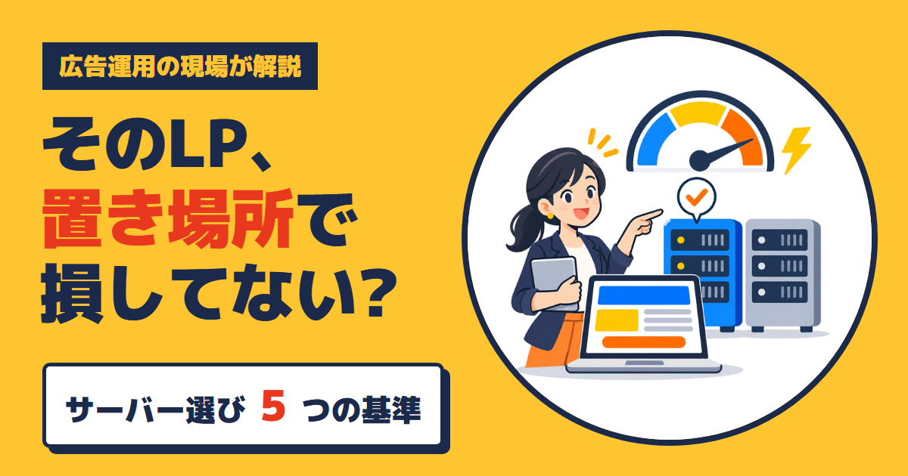

コラム ／ LP・サイト
本記事にはアフィリエイト広告(A8.net)を利用したリンクが含まれます。リンク経由でお申し込みがあった場合、運営者(SET UP)が報酬を受け取ることがあります。紹介するサービスの選定と評価は、運営者の基準で行っています。
LPはどのサーバーに置くべきか。広告運用の現場で見ている5つの基準

広告から人を集めるLP(ランディングページ)は、どこに置くかで表示の速さや計測のしやすさが変わります。サーバーの性能表だけでは分からない「広告を回す側から見た選び方」をまとめました。
「LPを作ったけれど、どこに置けばいいのか分からない」。広告の相談を受けていると、制作の終盤でこの質問がよく出てきます。デザインや原稿には時間をかけたのに、置き場所は空いているサーバーに何となく決めてしまう。実はそこで、広告の成果を左右する要素をいくつか取りこぼしています。
結論:迷ったら既存サイトと同じ場所に置く
先に結論を書きます。
- すでに会社のサイトがあるなら、そのサイトと同じサーバー・同じドメインの下に置くのが基本です。計測の設定が最も簡単で、新たな費用もかかりません。
- 既存サイトのサーバーが遅い、または触れない事情があるなら、LP用に国内の共用レンタルサーバーを新しく用意します。月1,000円前後から始められます。
- どちらの場合も、判断の基準は「表示速度」「安定性」「計測のしやすさ」「常時SSL」「差し替えやすさ」の5つです。
以下、順に理由を説明します。
まず決めるのは「どのURLで公開するか」
サーバーを選ぶ前に、LPをどのURLで公開するかを決めます。選択肢は3つです。
| 置き方 | URLの例 | 向いている場面 |
|---|---|---|
| サブディレクトリ | example.co.jp/lp/ | 会社サイトと同じ商材を売るとき。計測と管理が最も楽です。 |
| サブドメイン | lp.example.co.jp | 会社サイトとは別の環境で運用したいとき。別サーバーにも置けます。 |
| 新しいドメイン | example-campaign.jp | 独立した新規事業やブランドとして見せたいとき。 |
広告運用の立場から見ると、特別な理由がなければサブディレクトリをおすすめします。会社名と同じドメインで表示されるため、広告を見た人に「どこの会社か」が伝わりやすく、後で触れる計測の設定も単純になります。
なお、Google 広告では、広告に表示するURLのドメインと、実際のリンク先のドメインをそろえる必要があります。LPを別ドメインにする場合は、広告側の設定もそのドメインに合わせます。
広告運用の現場で見ている5つの基準
サーバー会社の比較記事では、容量や料金が中心になりがちです。しかしLPは1ページから数ページしかないことが多く、容量が問題になることはまずありません。広告から人を流す前提で、私が確認しているのは次の5つです。
1. 表示速度
広告をクリックした人は、ページが表示されるまでの数秒で「待つか、戻るか」を決めます。表示が遅いと、広告費を払って集めた人がLPを読む前に離れてしまいます。
Google 広告のヘルプでも、広告の品質を高める方法として、ランディングページの読み込み速度の改善が挙げられています。ページの読み込み速度は、購入するか離脱するかを左右することがある、という説明です。表示速度はサーバーだけで決まるものではありませんが(画像の重さの影響も大きいです)、土台となるサーバーが遅ければ、ページ側をいくら軽くしても限界があります。
2. 広告の配信量が増えても落ちないこと
LPはSEOで少しずつ人が増えるページと違い、広告を出した瞬間にアクセスが集中します。セールの開始日やテレビ・SNSで話題になった日は、ふだんの何倍もの人が同時に訪れます。そのときにページが開かなくなると、広告費だけが消えていきます。
個人の趣味のサイトと同じ感覚で、最も安いプランや無料のサーバーを選ぶのは避けてください。稼働実績を公開しているか、アクセスが増えたときにプランを上げやすいかを確認します。
3. 計測タグが入れやすいこと
LPには、Google アナリティクス(GA4)、Google タグマネージャー、各広告媒体のコンバージョンタグなど、複数の計測タグを入れます。HTMLを直接編集できるか、WordPressならタグを入れる場所を確保できるかを、事前に確認しておきます。
もう一つ大事なのがドメインをそろえることです。LPと申し込みフォームのドメインが違うと、計測のためにクロスドメインの設定が必要になり、設定の漏れでコンバージョンが正しく数えられないことがあります。会社サイトと同じドメインの下にLPとフォームを置けば、この問題は起きません。
4. 常時SSL(https)に無料で対応していること
URLが「https」で始まらないページは、ブラウザに「保護されていない通信」と表示されます。申し込みフォームのあるLPでこれが出ると、入力をためらう人が増えます。いまの国内の主要なレンタルサーバーは無料の独自SSLに対応していますが、念のため確認しておきます。
5. LPを差し替えやすいこと
広告の成果を伸ばすには、見出しや画像を変えたLPを複数用意して比べる(A/Bテスト)ことが欠かせません。そのたびに制作会社へ依頼し、数日待つ体制では、改善の回数が限られます。管理画面からファイルを差し替えられるか、WordPressで社内の担当者が更新できるかなど、社内で手を入れられる体制が取れるかも選ぶ基準になります。
LPの作り方で、必要なものは変わる
LPの作り方によっては、そもそもサーバーを用意する必要がありません。
| 作り方 | サーバー | 注意点 |
|---|---|---|
| LP作成ツール | 不要(ツール側に置く) | 手軽ですが、ドメインや計測タグの設定に制限があることがあります。 |
| HTMLで制作・外注 | 必要 | 制作会社に、納品後に自社で差し替えられる形か確認します。 |
| WordPress | 必要 | 社内で更新しやすい反面、プラグインの入れすぎで遅くなりがちです。 |
サーバーが必要になるのは、HTMLで制作する場合とWordPressで作る場合です。この2つに当てはまり、かつ既存サイトのサーバーを使えない場合に、次の章の候補を検討してください。
LP作成ツールのひとつ、ペライチの料金と、プラン別の制限(独自ドメインや計測タグの扱い)は、「ペライチの料金プランを比較。広告のLPに使うときに確認したい条件」で整理しています。
制作会社に任せる月額制のホームページや、AIで作るツールも候補にある場合は、解約したときのサイトとドメインの扱いや、計測タグを入れられるかを先に確認しておきます。それぞれ「ホームページのサブスク比較」と「AIでホームページを作るデメリット」で比べています。
LP用に検討しやすいレンタルサーバー2つ
ここでは、国内の共用レンタルサーバーの中から、上の5つの基準を満たしやすい2つを、要点だけ紹介します。どちらもエックスサーバー株式会社が提供しているサービスで、初期費用0円、無料の独自SSL、自動バックアップは両方にあります。料金は、各社の公式サイトで2026年11月19日に確認した内容です。
料金、容量、契約期間ごとの総額、乗り換えの手間まで含めた詳しい比較は、「シンレンタルサーバーとエックスサーバーの違い」にまとめています。
| エックスサーバー (スタンダード) | シンレンタルサーバー (ベーシック) | |
|---|---|---|
| 月額料金(税込) | 990円〜 (36ヶ月契約時) | 1,078円〜 (36ヶ月契約時) |
| 無料お試し | 10日間 | あり(期間は公式サイトで確認) |
エックスサーバー
公式サイトでは、W3Techsの調査(2026年6月時点)をもとに国内シェアNo.1と案内されています。稼働率99.99%以上の実績や、サーバーデータの自動バックアップも公開されています。
- 向いている人:会社のLPを初めて自前で置く人、利用者の多さと安定性を重視する人
- 10日間の無料お試しがあり、契約前に管理画面の使い勝手を確認できます
シンレンタルサーバー
エックスサーバー社が、新しい技術を積極的に取り入れる方針で提供しているサービスです。最安のベーシックプランで仮想CPU 6コア・メモリ8GB・容量700GBと公式に案内されています。運用できるコンテンツのジャンルに制限がない点も公式に案内されています。
- 向いている人:最安プランの仕様を重視する人、新しい機能を早く使いたい人
- 最安プランの月額は、エックスサーバーより少し高めです
2社の違いをもっと詳しく比べたい場合は「シンレンタルサーバーとエックスサーバーの違い」を、今のサーバーが遅くて移転を考えている場合は「WordPressが遅い。サーバーを変える前に確認する3つのこと」を参照してください。
よくある質問
- Q. 無料のサーバーにLPを置いてもいいですか?
- 広告を出すLPにはおすすめしません。表示速度や安定性が保証されないことが多く、サービスによっては勝手に広告が表示されます。広告費を払って集めた人を、そこで逃すことになりかねません。
- Q. LPのためだけに、会社サイトとは別のサーバーを契約する必要はありますか?
- 既存サイトのサーバーで、表示速度と計測タグの設定に問題がなければ不要です。サーバーを分けると、管理や計測の手間が増えます。
- Q. 一番安いプランで足りますか?
- LPが数ページで、アクセスが極端に集中しない規模であれば、多くの場合は最安プランから始められます。広告の配信量を大きく増やす予定があるなら、上位プランへ変更できるかを事前に確認しておきます。
まとめ
LPの置き場所は、制作の最後に何となく決めるものではありません。
- 会社のサイトがあるなら、まず同じドメインのサブディレクトリに置けないか検討する
- 新しく用意するなら、表示速度・安定性・計測・常時SSL・差し替えやすさの5つで選ぶ
- 容量や月数百円の料金差より、広告を回す運用のしやすさを優先する
広告の成果は、広告管理画面の中だけで決まるものではありません。クリックの先にあるLPが速く、正しく計測できて、すぐ改善できること。その土台を整えることも、広告運用の一部です。